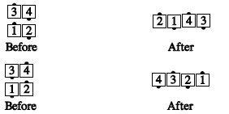
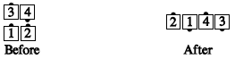
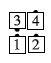

From box circulate formation: Without letting go hands with the leads, the trailers Extend and U-Turn Back, to end with their original outside hands joined. The leads follow along, becoming the ends of the resulting wave.

From 2x2 formations where half the box is a couple and the other is a right-hand mini-wave: Those in the couple do a facing-couples Recycle, and those in the mini-wave do a Split Recycle. This ends in a right-hand wave.

This can't be done when the mini-wave is left-handed:

Where not otherwise ambiguous, it is permissible to call simply, "Recycle" when you mean "Split Recycle". For example, from columns, you could call "Outsides Partner Tag while the centers Recycle" and the meaning is clear. From parallel waves, though, "Recycle" and "Split Recycle" are different, and one must not be called when the other is meant.